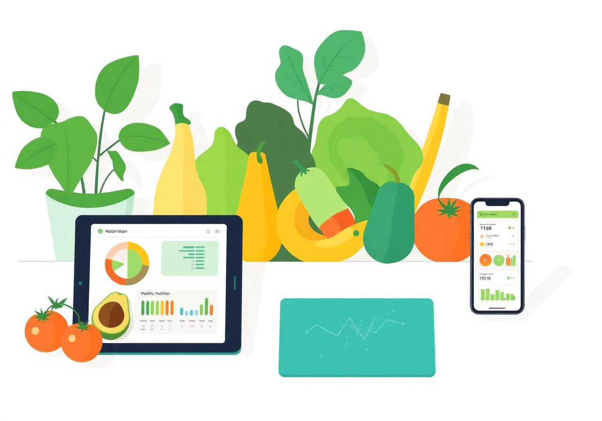

📊
Nutrição Baseada em Dados
Avaliação alimentar detalhada com análise de hábitos e métricas para uma compreensão profunda do seu corpo.
Unindo ciência da nutrição e tecnologia para transformar saúde em dados, hábitos e resultados.

Sou Wilmila Braga, nutricionista e desenvolvedora de software. Minha missão é transformar a forma como as pessoas cuidam da própria saúde.
Unindo ciência da nutrição com tecnologia, desenvolvo estratégias alimentares inteligentes, baseadas em dados, comportamento e estilo de vida real.
Uma abordagem que combina ciência, dados e tecnologia para criar resultados reais e sustentáveis.
Avaliação alimentar detalhada com análise de hábitos e métricas para uma compreensão profunda do seu corpo.
Planos alimentares adaptados à sua rotina, objetivos e estilo de vida — nada genérico.
Ferramentas digitais, acompanhamento inteligente e métricas de evolução para resultados mensuráveis.
Tratamento nutricional baseado em evidências científicas.
Mudança de hábitos de forma gradual e sustentável.
Perda de peso com saúde, sem dietas restritivas.
Alimentação estratégica para atletas e praticantes.
Acompanhamento individual com foco nos seus objetivos.
Desenvolvimento de soluções tecnológicas aplicadas à nutrição.
Como desenvolvedora, aplico princípios de tecnologia à nutrição: análise de dados, acompanhamento digital e ferramentas que tornam a saúde mais mensurável e sustentável.
Cada paciente recebe um acompanhamento que vai além do plano alimentar — com métricas de evolução, dashboards personalizados e insights baseados em dados reais.
“A Wilmila mudou completamente minha relação com a comida. O acompanhamento com dados e tecnologia fez toda diferença nos meus resultados!”
Mariana S.“Profissional incrível! Consegui emagrecer de forma saudável e o dashboard de acompanhamento me manteve motivado o tempo todo.”
Carlos R.“Nunca tive um atendimento nutricional tão personalizado. A Wilmila usa tecnologia de verdade para entender nossas necessidades.”
Ana Paula L.Descubra quais alimentos podem transformar seu nível de energia e produtividade.
Ler mais →Entenda como métricas e tecnologia estão mudando o atendimento nutricional.
Ler mais →Pequenas mudanças que fazem grande diferença na saúde e no bem-estar.
Ler mais →Entre em contato para agendar sua consulta ou tirar dúvidas.